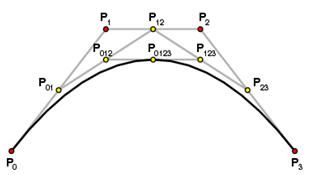

We can also construct a Bezier curve by taking mid points.

- The basis functions are real.
- The Bezier curve always passes through the first and last control points i.e. curve has same end points as the guiding polygon.
- he degree of the polynomial defining the curve segment is one less than the number of defining polygon point. Therefore, for 4 control points, the degree of the polynomial is 3.
- The curve generally follows the shape of the defining polygon.
- The direction of the tangent vector at the endpoints is the same as that of the vector determined by first and last segments.
- The curve lies entirely within the convex hull formed by 4 control points.
- The convex hull property for a Bezier curve ensures that the polynomial smoothly follows the control points.
- The curve exhibits the variation diminishing property. This means that the curve does not oscillate about any straight line more than the defining polygon.
- The curve is invariant under an affine transformation.